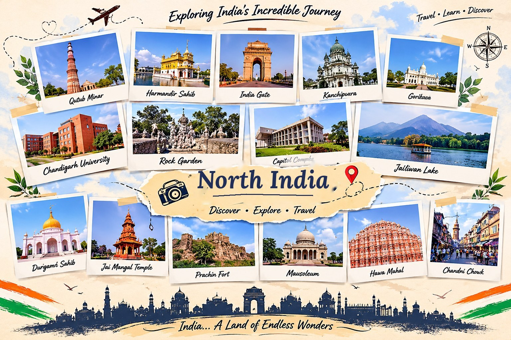

Four Days. Three Destinations. One Master’s Milestone.
27 – 30 NOV 2026 · FRI TO MON
DELHICU GHARUAN · MOHALIAMRITSAR · PUNJAB
FRI 27 NOVKOL → DELLand 9:00 · train 19:00
SAT 28 NOVCU → AmritsarDegree day, then cab
SUN 29 NOVAmritsarGolden Temple · Wagah
MON 30 NOVASR → DEL → CCUDirect to Delhi · 19:00 train
Trip overview
From Kolkata to Delhi, Gharuan and Amritsar · 4 days · 3 destinations
Kolkata 27 Nov
Delhi 9 AM–7 PM
Chandigarh night train
CU Gharuan 28 Nov
Amritsar 28–29 Nov
Delhi 30 Nov
Kolkata night
04days
03destinations
16places to visit
12food stops
Must-know reminders
• 30 Nov is a Monday: Red Fort is closed on Mondays (verify). Plan covers it from outside.
• Wagah border: the BSF changes the retreat-ceremony time with the seasons (it was advanced 30 min from 16 Oct 2026) and has run it in a scaled-down format since May 2025 (no handshake, gates closed). Confirm the time and format on the day, carry photo ID, take only a small bag and arrive about 2 hrs early.
• Train numbers, stations, times: not provided, so every one is an editable placeholder below. Nothing here is an official timetable. Recheck all hours, fees and fares near travel date.
• 28 Nov night: the Gharuan → Amritsar road is about 4.5–5.5 hrs and winter fog is common. Book the cab, the Amritsar hotel and the Amritsar → Delhi ticket now.
• Rule: reach the railway station at least 90 min before departure, no exceptions.
Your ticket details (editable, saved on this device)
Where to visit
Tap a place name to jump to its day plan.

Illustrated travel collage from the first plan. Some labels are artistic, and the Chandigarh stops are no longer on the route: use the list below for the real stops.
Day-wise plans
Tap a day. Tap a place to expand it.
Transport planner
Fares and durations are rough estimates; confirm in Google Maps or the app on the day.
Food explorer
Filter, then tick what you have tried. All venues: confirm that they are open before you walk there.
Budget planner (₹, estimates)
Not confirmed prices. Edit any number. Flight and train tickets excluded.
Travel checklist
Late-November weather (climate averages, NOT a forecast)
Delhi
Typically about 9–25 °C. Cool mornings and evenings, pleasant afternoons.
Amritsar / Mohali
Typically about 7–23 °C. Cold nights and mornings, often with dense fog, especially on the highway and at the Wagah border in the evening.
Carry a light jacket or sweater, comfortable walking shoes, and a scarf for gurdwaras. Dense morning fog is possible in north India in winter, which can delay flights and trains: that matters for your 7 PM and Kolkata trains, so check status the morning of each journey. Check an actual forecast 3 days before.
Air quality (AQI)
Live AQI-US, auto-refreshing every 10 minutes while the page is open (source: aqi.in where reachable, otherwise a live air-quality model). Weather loads when you are online. Typing a number in a city’s box overrides it; clear the box to go back to live.
Loading air quality…
Late November reality check: Delhi-NCR air is often poor to severe in late autumn/winter (Delhi showed 278, “Severe”, on aqi.in on 20 Nov, for example), and Mohali and Amritsar can be moderate to unhealthy on still, foggy days. This is a general seasonal pattern, not a forecast. Carry an N95/FFP2 mask, keep water handy, and plan indoor stops (metro, cafés, gurdwara halls) if the AQI is high. Official CPCB AQI · aqi.in Delhi · aqi.in Amritsar
Photography planner
Memories from My Master’s Convocation Trip
🎓 Must-have shots: degree in hand · campus gate · with teachers · with friends · cap toss · one solo portrait at the Chandigarh stop of your choice.
My Master’s Graduation Moment
🎓
Write your convocation story. It saves automatically on this device.
Photos: Wikipedia / Wikimedia Commons contributors, shown when online. Fees, hours and fares are estimates: re-check before travel.